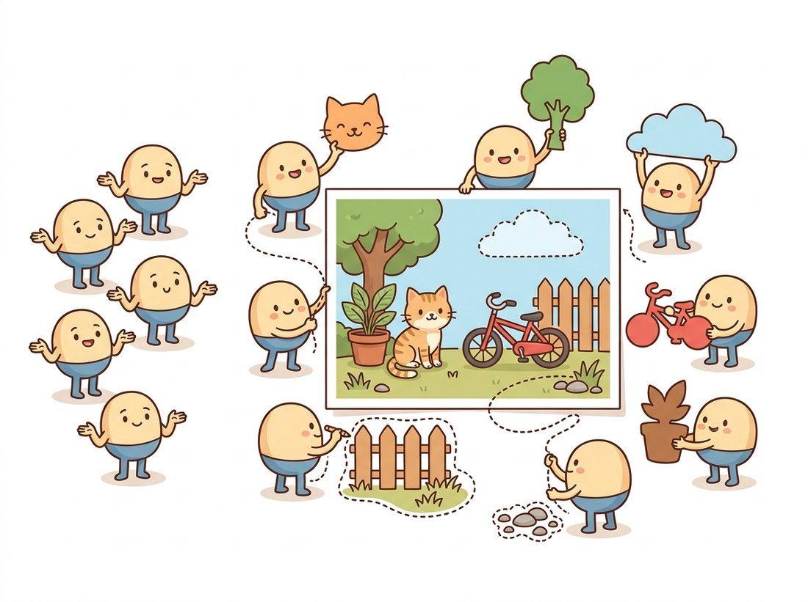

"For years I labeled the grid one cell at a time, like filling in a spreadsheet. Then a transformer handed me a hundred blank queries and said: each of you, go claim a region and tell me what it is. The spreadsheet became a conversation, and somehow the masks got sharper."
A Mask Query Looking for Something to Segment
Transformer segmenters reframe segmentation from "label every pixel of a grid" to "predict a set of masks, each with a class," and that reframing lets one architecture do semantic, instance, and panoptic segmentation at once. SegFormer shows the first half of the story: a hierarchical transformer encoder, a multi-scale pyramid of the kind you met in Chapter 22, paired with a decoder so simple it is just a few multilayer perceptrons (MLPs), beats the convolutional segmenters of Section 24.1 on accuracy and efficiency. Mask2Former completes the story: a transformer decoder where a fixed set of learnable queries each attend to the image and emit one mask plus one class label, with masked attention that focuses each query on its own region. The grid-labeling view and the mask-set view give the same pixels, but the mask-set view is what makes the architecture universal.
The attention you built in Chapter 22 conquered classification and, in the previous chapter, detection. This section is where it arrives in dense prediction, and it does so in two distinct moves. The first, SegFormer, keeps the familiar "label the grid" output but rebuilds the encoder and decoder around attention. The second, Mask2Former, changes the output itself, and in doing so dissolves the boundary between the three segmentation tasks you spent the last three sections separating.
1. SegFormer: Hierarchical Attention, Trivial Decoder Intermediate
If the decoders of Section 24.1 were elaborate machines for clawing resolution back, SegFormer's question is mischievous: what if a strong enough encoder made almost the entire decoder unnecessary? It answers with two clean design choices. The encoder, called Mix Transformer or MiT, is a hierarchical vision transformer: like the pyramid transformers of Chapter 22, it produces feature maps at four decreasing resolutions (1/4, 1/8, 1/16, 1/32 of the input), so the segmenter naturally has the multi-scale features that Section 24.1 worked so hard to recover. To keep attention affordable at high resolution it uses efficient (spatial-reduction) self-attention. Notably, it drops positional embeddings entirely. In their place it injects position with a small depthwise convolution (Section 19.2), a convolution that filters each channel independently, inside the feed-forward block, which makes the model robust when the test resolution differs from training.
With that strong multi-scale encoder doing the heavy lifting, the decoder is the surprise: it simply takes the four feature maps, passes each through one MLP to a common channel width, upsamples them all to 1/4 resolution, concatenates, fuses with one more MLP, and predicts the class logits. No heavy decoder, no dilated pyramids. Figure 24.4.1 shows the asymmetry.
The lesson SegFormer taught the field is that a strong, multi-scale transformer encoder makes the decoder almost free; the convolutional gymnastics of Section 24.1 were partly compensating for weaker encoder features. SegFormer remains the go-to when you want a fast, accurate, plain semantic segmenter, and it is a one-line load from Hugging Face, as the library shortcut below shows. But it still produces a grid of per-pixel class labels, the same output type as FCN. The deeper change is next.
2. Mask Classification: Predict a Set of Masks Advanced
Mask2Former (2022) builds on a simple but radical idea, inherited from the DETR detector of Chapter 23 and its predecessor MaskFormer: instead of classifying each pixel, classify a fixed set of masks. The model maintains $N$ learnable object queries (say 100). Each query, through a transformer decoder, produces one binary mask over the image and one class label (including a special "no object" label). To turn that mask set into any of the three task outputs, you just read it differently. For semantic segmentation, merge all masks predicted as the same class. For instance segmentation, keep each thing-mask as a separate instance. For panoptic segmentation, take the highest-scoring non-overlapping subset. One model, one training run, three tasks, exactly the unification the partition view of Section 24.3 promised. The total prediction is
where each query $i$ emits a soft mask $m_i$ and a probability distribution $p_i$ over $K$ classes plus the no-object class (the symbol $\Delta^{K}$ just means "a vector of $K$ probabilities that sum to one," the output of a softmax). During training, a bipartite (Hungarian) matching, the same set-prediction loss as DETR, assigns predicted masks to ground-truth masks so the loss does not depend on ordering. The single most important architectural ingredient that made this competitive is masked attention: in the cross-attention where queries read the image, each query is restricted to attend only within the region of its own mask prediction from the previous decoder layer, rather than the whole image. This focuses each query on its object and dramatically speeds convergence. Figure 24.4.2 traces a query through the decoder.
Pixel classification is the special case of mask classification where you fix the masks to be the individual pixels and there is exactly one query per spatial location. Mask classification frees both: the masks are learned, arbitrary-shaped regions, and there are far fewer of them than pixels. This is why one Mask2Former trained once produces all three task outputs, and why it beats Mask R-CNN on instance segmentation and DeepLab on semantic segmentation simultaneously. The set-prediction view from DETR in Chapter 23 turned out to be the unifying language for all of dense recognition.
The code below sketches the mask-classification output and the dot-product between query embeddings and a per-pixel feature map that produces masks, the operational core that distinguishes this family from grid labeling.
# The mask-classification output that distinguishes Mask2Former from grid labeling.
# Each of N learnable queries yields one class distribution and one mask, where the
# mask is the dot product of a learned per-query kernel with every pixel embedding.
import torch
import torch.nn as nn
class MaskHead(nn.Module):
"""Turn N query embeddings into N masks and N class logits (Mask2Former-style)."""
def __init__(self, dim=256, num_classes=19, num_queries=100):
super().__init__()
self.queries = nn.Embedding(num_queries, dim) # learnable object queries
self.class_head = nn.Linear(dim, num_classes + 1) # +1 for "no object"
self.mask_embed = nn.Sequential(nn.Linear(dim, dim), nn.ReLU(),
nn.Linear(dim, dim)) # maps query -> mask kernel
def forward(self, pixel_feats, refined_queries):
# pixel_feats: (B, dim, H, W) per-pixel embeddings from the pixel decoder.
# refined_queries: (B, N, dim) after the transformer decoder of Figure 24.4.2.
cls = self.class_head(refined_queries) # (B, N, num_classes+1)
kernels = self.mask_embed(refined_queries) # (B, N, dim)
# Mask i = dot product of query kernel i with every pixel embedding.
masks = torch.einsum("bqd,bdhw->bqhw", kernels, pixel_feats) # (B, N, H, W)
return cls, masks.sigmoid() # soft masks in [0, 1]
head = MaskHead()
cls, masks = head(torch.randn(2, 256, 64, 64), # pixel features
torch.randn(2, 100, 256)) # refined queries
print(cls.shape, masks.shape) # torch.Size([2, 100, 20]) torch.Size([2, 100, 64, 64])MaskHead. The class_head maps each of the 100 queries to a distribution over classes plus a "no object" slot, and the torch.einsum("bqd,bdhw->bqhw", ...) forms each mask as the dot product of a learned query kernel with every pixel embedding. The output (2, 100, 20) and (2, 100, 64, 64) is a set of (class, mask) pairs, not a per-pixel label grid.Mask2Former predicts a fixed 100 queries no matter what the image contains, a single bird or a flock of fifty, so on a quiet image most of those queries dutifully report "no object" and go home empty-handed. The "no object" class is doing real work: it lets the model hedge by leaving queries unused rather than forcing every one to hallucinate a region, the same escape valve DETR gave detection. Think of the 100 queries as 100 interns sent to find objects; the good architecture is the one that lets most of them honestly say "nothing here" instead of inventing a mask to look busy. The illustration below pictures that crew of query-interns at work.

The output shapes say it all: 100 candidate masks and 100 class distributions per image, regardless of the task. The einsum that builds the masks, a per-query kernel dotted against every pixel embedding, is a dynamic convolution, and it is the exact operation that also appears in SAM's mask decoder in Section 24.5. The mask-set idea is becoming the common substrate of modern segmentation.
Both architectures are non-trivial to implement well, the MiT encoder and the masked-attention decoder each take hundreds of lines, but Hugging Face Transformers ships pretrained weights behind a uniform API:
# Load pretrained SegFormer and Mask2Former from Hugging Face in a few lines.
# The processors handle resizing and normalization; the single Mask2Former
# checkpoint exposes semantic, instance, and panoptic post-processors.
from transformers import (SegformerForSemanticSegmentation, SegformerImageProcessor,
Mask2FormerForUniversalSegmentation, AutoImageProcessor)
import torch
from PIL import Image
# SegFormer for plain semantic segmentation.
proc = SegformerImageProcessor.from_pretrained("nvidia/segformer-b0-finetuned-ade-512-512")
seg = SegformerForSemanticSegmentation.from_pretrained("nvidia/segformer-b0-finetuned-ade-512-512")
img = Image.new("RGB", (512, 512)) # stand-in for a real image
logits = seg(**proc(img, return_tensors="pt")).logits # (1, 150, H/4, W/4)
# Mask2Former for panoptic segmentation; the SAME model does instance and semantic too.
m2f_proc = AutoImageProcessor.from_pretrained("facebook/mask2former-swin-base-coco-panoptic")
m2f = Mask2FormerForUniversalSegmentation.from_pretrained(
"facebook/mask2former-swin-base-coco-panoptic")
out = m2f(**m2f_proc(img, return_tensors="pt"))
panoptic = m2f_proc.post_process_panoptic_segmentation(out, target_sizes=[(512, 512)])[0]
print(panoptic["segmentation"].shape) # torch.Size([512, 512])SegformerImageProcessor and AutoImageProcessor handle resizing and normalization, and post_process_panoptic_segmentation converts the single Mask2Former checkpoint's mask set into a clean (512, 512) panoptic map, one model serving all three task readouts.This loads state-of-the-art segmenters in a handful of lines, with the processor handling resizing, normalization, and, for Mask2Former, the conversion from the mask set of subsection 2 into a clean panoptic map. The same Mask2Former checkpoint exposes post_process_instance_segmentation and post_process_semantic_segmentation, one model, three task outputs, exactly as promised.
Who: a small computer-vision team serving a smart-city analytics product, 2024. Situation: they were running three separate networks in production: a DeepLab for road-and-sidewalk semantic maps, a Mask R-CNN for counting vehicles and pedestrians, and a hand-written merge script to produce the panoptic view the dashboard showed. Problem: three models meant three training pipelines, three sets of weights to keep in sync, and roughly triple the GPU memory at inference; the merge script was a recurring source of off-by-one bugs at the thing-stuff boundaries. Decision: they replaced all three with a single Mask2Former checkpoint, reasoning from the unification argument of subsection 2 that one mask-classification model could serve all three readouts. They validated that per-task accuracy (mean IoU for semantic, mask average precision for instance, panoptic quality for panoptic) was within a point of the three specialists. Result: inference memory dropped by about two-thirds, the merge script and its bugs were deleted, and a single fine-tuning run now updates all three products at once. Lesson: the mask-set reframing is not only an accuracy story; operationally, collapsing three models into one universal segmenter is often the bigger win, fewer pipelines, less memory, no glue code. The right abstraction pays its rent in maintenance.
The "one model, three readouts" property of subsection 2 is a portfolio project waiting to happen, and the smart-city team above is the industry version of it. Load a single facebook/mask2former-swin-base-coco-panoptic checkpoint, run it once per frame, and from that one forward pass drive three live panels: a semantic map of drivable road and sidewalk (call post_process_semantic_segmentation), a per-instance count of vehicles and pedestrians (call post_process_instance_segmentation), and the merged panoptic overlay (call post_process_panoptic_segmentation), reading the same mask set three ways exactly as Exercise 24.4.2 has you do. Point it at a traffic webcam stream and you have a scene-analytics dashboard, with no glue code, no three-model merge script, and no off-by-one bugs at the thing-stuff boundary, that demonstrates the mask-classification reframing far more convincingly than any single static image. It is the clearest way to show, in a demo, why the right abstraction pays its rent.
Mask2Former unified the three closed-vocabulary tasks; the 2023-2025 frontier removes the fixed vocabulary and adds prompting. OneFormer (2023) trains one model jointly on all three tasks with a task token, beating task-specific Mask2Formers. Open-vocabulary segmenters such as ODISE and FC-CLIP graft the CLIP text-image space (Chapter 34) onto the mask-classification head so queries can be matched against arbitrary text-named classes never seen in training. And the mask decoder of Mask2Former is structurally close to the promptable mask decoder of the Segment Anything Model (Section 24.5), the next section, where the queries come not from a learned embedding table but from a user's click or box. The trajectory is clear: from per-pixel grids, to mask sets, to mask sets you can name and point at.
SegFormer deliberately removes the learned positional embeddings that a standard ViT (Chapter 22) relies on, injecting position through a depthwise convolution in the feed-forward block instead. Explain in three or four sentences why fixed-length learned positional embeddings are awkward for a segmenter that must run at many input resolutions, and why a convolution-based positional signal is naturally resolution-flexible. Connect your answer to the resolution problem of Section 24.1.
Load facebook/mask2former-swin-base-coco-panoptic from Hugging Face and run it once on a single image of a street scene. From the same forward pass, call the three post-processing functions (semantic, instance, panoptic) and display the three resulting maps side by side. Write a paragraph identifying, concretely, what differs between the three readouts of the same underlying mask set: which pixels change label, where instance ids appear and disappear, and how the panoptic map enforces the partition of Section 24.3.
Masked attention restricts each query to attend only within its current predicted region. Reason about the effect on both convergence and final accuracy: why would limiting attention to a query's own region speed up training (think about the signal-to-noise ratio of the attention weights early in training), and what failure mode could arise if an early-layer mask prediction is badly wrong and excludes the true object? Write a short analysis, and propose how the iterative layer-by-layer refinement of Figure 24.4.2 mitigates that failure mode.